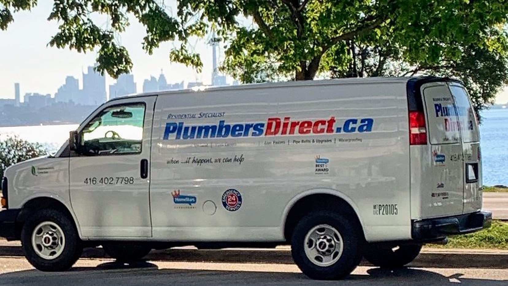

Water main repairs
Your water main is the one pipe everything depends on. Many pre-1950s Toronto homes still have a lead or undersized service; we replace it from the property line in.

The water service runs from the City's main at the street to your meter. In older High Park, Junction, Roncesvalles and Bloor West homes that line is often lead or half-inch galvanized, which means low pressure and, in the case of lead, a health concern the City actively encourages owners to fix.
We replace the private side of the service with new copper, coordinate with the City for the public side where needed, and handle the permit and inspection. Most replacements are finished in a day.
Polybutylene supply piping (grey plastic, common in 1980s and 90s construction) fails without warning. If your home has it, we can replace it room by room or all at once.
What's included
- Water pipe replacement
- Lead pipe replacement
- Emergency water main breaks
- Polybutylene (Poly-B) replacement
- Water meter repair & replacement
- City-mandated water main upgrades
- Low water pressure assessment